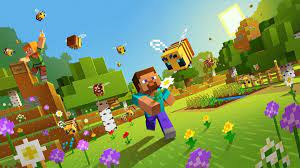
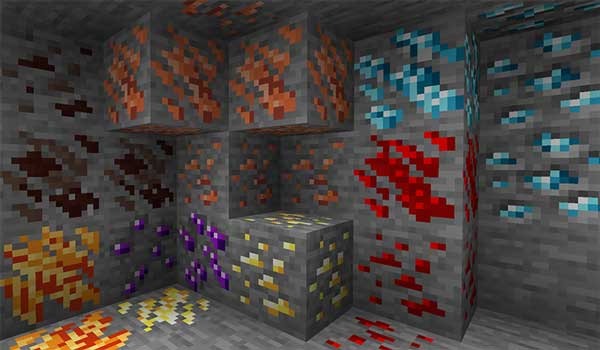
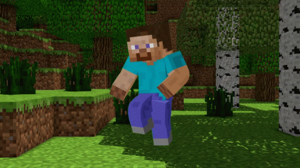
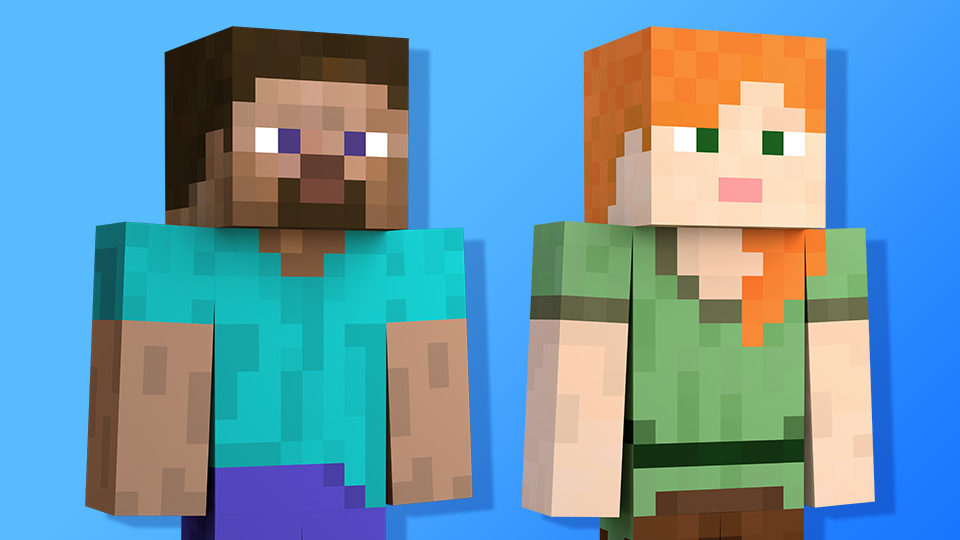
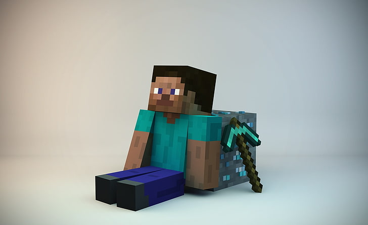
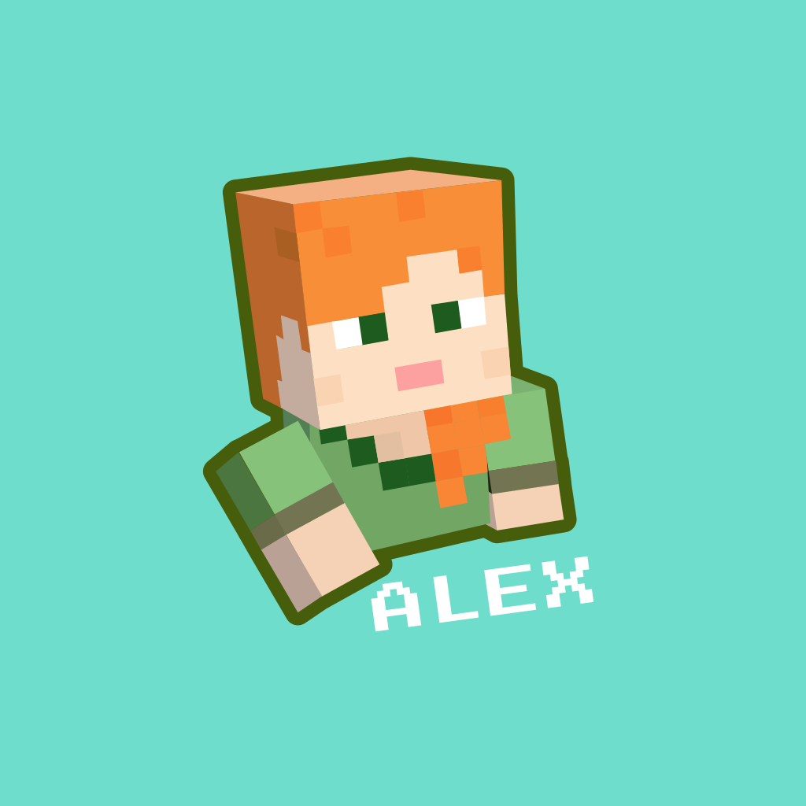

Dra a conocer la hitoria de Minecraft con datos :)
Desarrollo o introducción
El Desarrollo viene siendo sencillo,explicar con datos y dar lo mas aceptado por la cominidad gaming sobre que es?
,que paso?,etc.Es llegar a un punto donde tenga algun senditodo esto y la proxima vez que jueguez este juego lo veas con un puntode vista diferente.

Minecraft
Emocion al encontrar un Ore
24/11/21
Ores acomodados por sentimiento xd
Mejores minerales del menos anelado al mas anelado(Over-world y Nether)
Cobre
Rubi
Esmeralda
Lapizlazuli
Redstone
Oro
Carbon
Hierro
Netherite
Diamante

Ores en Minecraft
Paginas de donde se sacara la informacion
24/11/21
Aviso:La pagina de Wikipedia solo es de relleno.Att. T.L.8.4
El video nos muestra quien es steve ya que steve no pertenece a lo que es un ser humano como nosotros
El autor quiere mostrar quien es Steve abase de buenos argumentos y cosas dentro y fuera del juego
¿Quien es Steve?
14/12/21
¿Quien(es) es(son)?
Bien,cualquier persona que ha jugado Minecraft y visto mas alla de Play sabe que existen dos Apariencias para el jugador predeterminadas(el juego te las da asi por que asi)
Steve y Alex,son estas dos.El caso es que estas dos skins son una representacion humana en este juego,y eso es lo que asumen porque nunca se nos da un contexto veridico o algo para saber que pasa.
Pero a su vez no son tan humanos como lo parece Steve tanto Alex tienen la capacidad de romper bloques no tan pesados(para ellos para,nosotros si) usando sus propias manos.
Steve es la representacion del Hombre y Alex es la representacion de la Mujer.

Steve y Alex--Creditos al Autor
¿Que habilidades posee Steve?
Bien para empezar Steve mide este cuenta con una barra de corazones que representa un 100%
Que ademas se debe mantener con una barra de comida que mientras mas trabajo haga dentro del juego,Steve pasara a tener hambre y al igual que la barra de vida representa un 100%,al llegar esta a un 30% dejaras de poder correr y solo te limitaras a poder caminar.
Y cuando llegue a 0% sera cuando empiezes a perder tus corazones por falta de Alimento y te quedaras con 5% de vida
Ademas,tiene grandes conocimientos en supervivencia y concimeinto de portales que conectan a otras dimenciones,super-resistencia y espacio para llevar cosas exageradamente ridiculas--a pesar de esto Steve-- puede morir claro y tambien revivir(respawn)

Steve--Creditos al Autor--
¿Que habilidad posee Alex?
Bien y para terminar Alex mide (al igual que Steve) esta cuenta con una barra de corazones que representa un 100%
Que ademas se debe mantener con una barra de comida que mientras mas trabajo hagas dentro del juego,Alex pasara a tener hambre y al igual que la barra de vida representa un 100%,al llegar esta a un 30% dejaras de poder correr y solo te limitaras a poder caminar.
Y cuando llegue a 0% sera cuando empieze a perder sus corazones por falta de Alimento y se quedaras con 5% de vida
Al igual que Steve,tiene grandes conocimientos en supervivencia y portales que conectan a otras realidades,super-resistencia y espacio para llevar cosas exageradamente ridiculas--a pesar de esto Alex-- puede llegar a morir claro ,y tambien revivir(respawn)>

Alex--Creditos al Autor--
Video artículo
24/01/22
¿Que son los sonidos de las cuevas de Minecraft?
Aqui se abordara la respuesta a esta pregunta que es interesante si alguna vez te lo haz llegado a preguntar.
 Minecraft Lore
Minecraft Lore